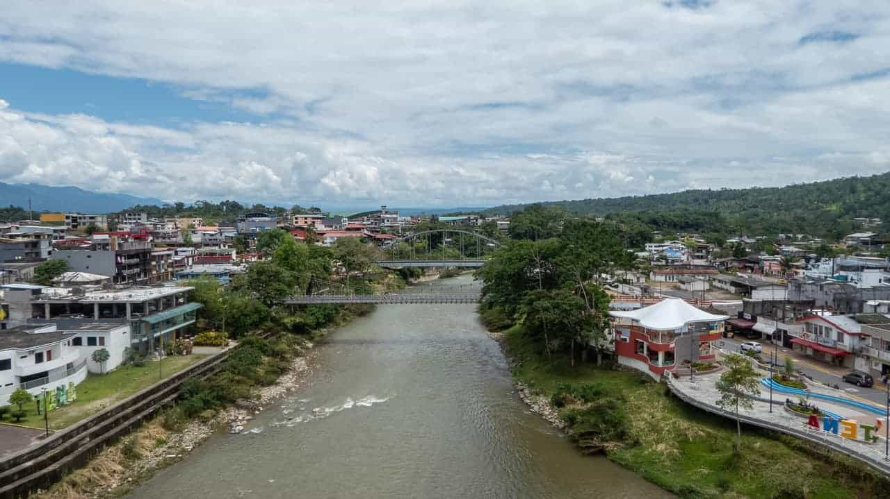
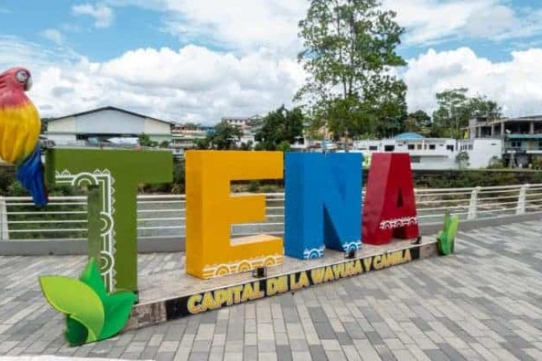
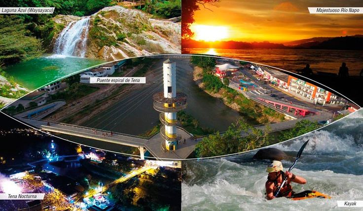
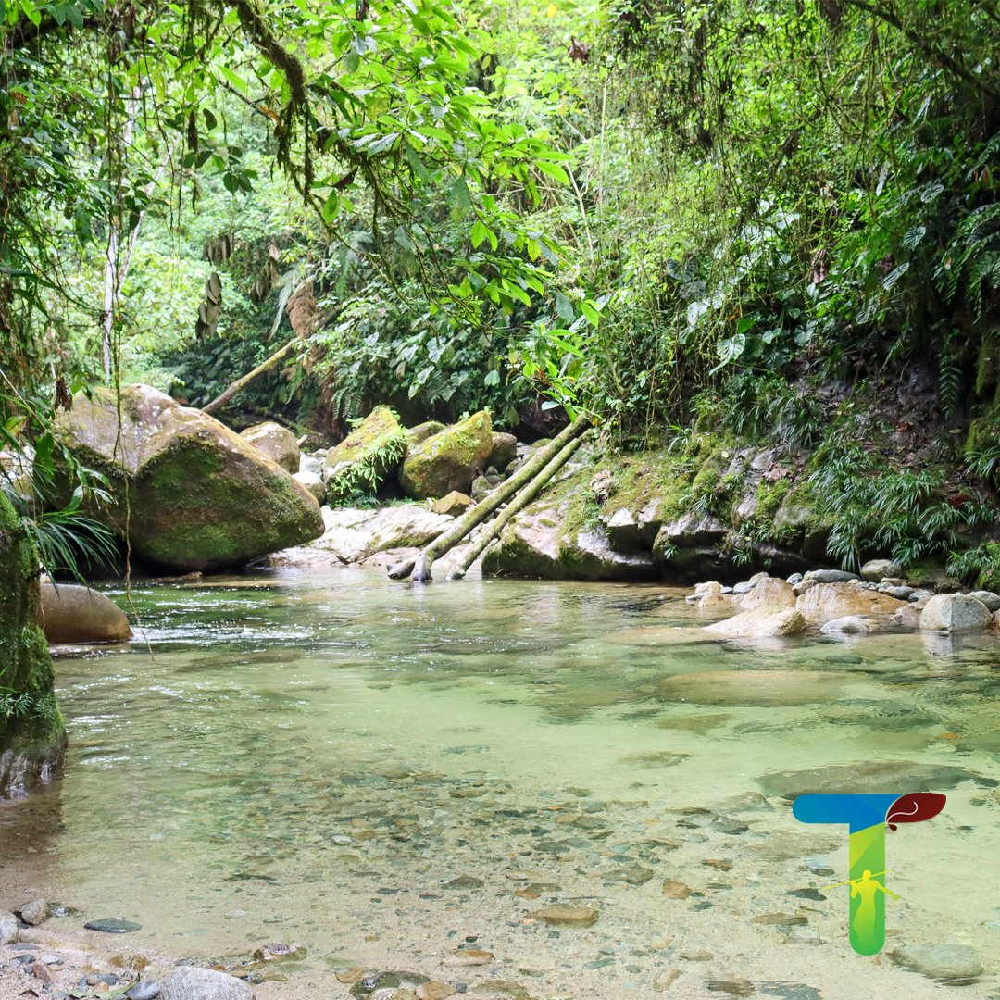
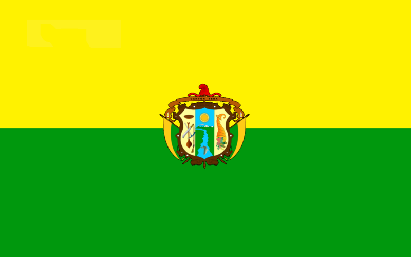
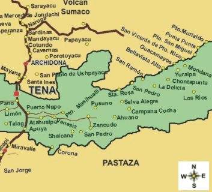
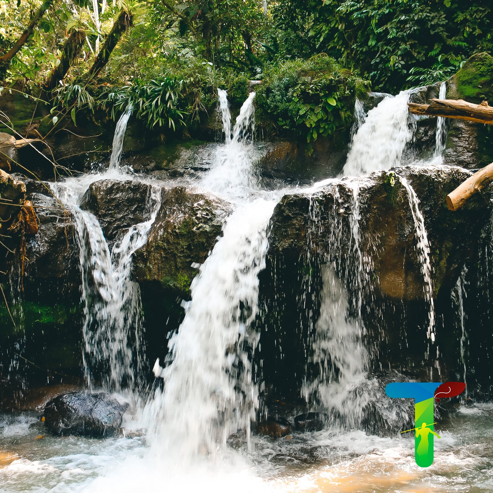
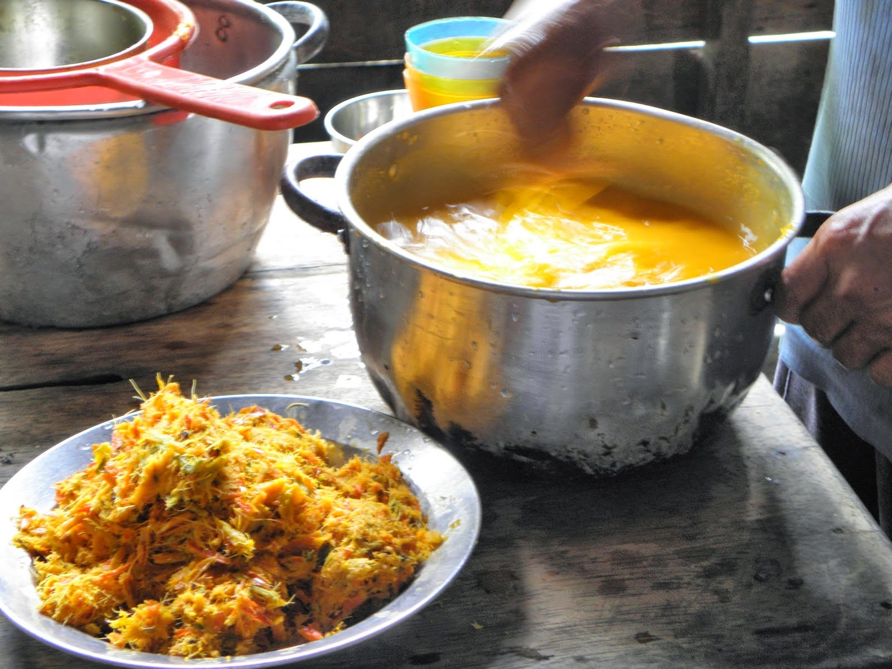

El Cantón Tena cuenta con una diversidad de atractivos naturales y manifestaciones culturales
que se ubican
en cada una de las parroquiaslas mismas que poseen características especiales
que permiten a los visitantes
conocer su historia y tradiciones de las etnias Kichwa y Huaorani.
Entre las actividades que se pueden realizar
son: excursiones a la selva, deportes de riesgo:
rafting, kayak, tubing, canyoning trekking; eventos culturales como:
música kichwa, danza,
shamanismo, visita a los petroglifos, observación de aves, comidas típicas entre otras.
Es el centro político de la provincia, alberga los principales organismos gubernamentales, culturales y comerciales.








Sus orígenes datan de la época colonial, pero es a inicios del siglo XX, debido a la llegada de la Misión Josefina, cuando presenta un acelerado crecimiento demográfico hasta establecer un poblado urbano, que sería posteriormente, uno de los principales núcleos urbanos de la región.
Es uno de los más importantes centros administrativos, económicos, financieros y comerciales de la amazonía. Las actividades principales de la ciudad son el comercio, la agricultura, y el turismo.
La Bandera del Cantón Tena es de forma rectangular, está dividida horizontalmente en dos franjas de las mismas dimensiones. La superior es de color Oro y simboliza la riqueza aurífera y la inferior es verde; representa la abundante y rica flora del Cantón.
Este Escudo consta de un campo con los blasones del Cantón. El campo está dividido en tres cuarteles.
Página creada por Estefanny Lovera